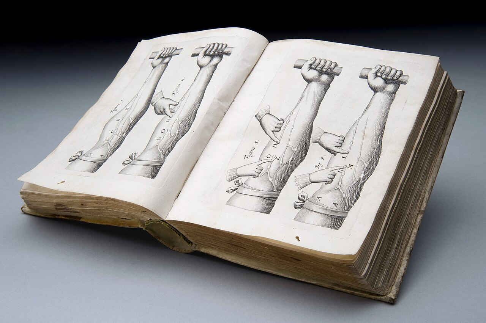

AI 講得沒錯，但它不認識你

「醫師，我來之前先問過 AI 了。」
病人把手機轉過來。螢幕上是一段整齊的說明，分點列項，語氣平穩，內容大致上沒有錯。
我問他，那它有說這些是從哪裡看來的嗎。
他往上滑了一下，說：沒有欸。
那一刻我想的不是他查得對不對。而是另一件事 ⸺ 他已經自己先走了一段路，那我這邊要接的，是哪一段。
先講好的那一面
門診時間很短。
如果病人來之前已經大致知道偏頭痛是什麼、知道自己這種痛跟腦子裡長東西不是同一回事，我就不用從最基本的地方講起。省下來的那幾分鐘，可以拿去問更要緊的事：這半年為什麼發作變密、止痛藥一週吃幾天、睡眠是從什麼時候開始壞掉的。
做過功課的病人，問題通常比較具體。「我想知道我這個需不需要做檢查」，比「醫師我頭痛」好回答太多。
有一種情況我印象特別深。半邊臉或牙齒附近痛，先看了牙科，牙醫說牙齒沒問題；有人甚至已經拔了牙、做完根管，痛還在。後來是自己查到，或是牙科轉過來，帶著「這會不會是三叉神經痛」這個問題走進來。
那是一個好問題。它把範圍縮小了，也讓接下來該問的那一輪問題有地方接。
而且有些 AI 講得其實不差。常見的機轉、一般的處理原則、什麼情況要盡快就醫，這些它多半答得中規中矩。所以我不反對病人先問，我自己也會查。
麻煩的不是 AI 講錯，是它講得太有把握
真正讓我停下來的，是另一種病人。
還沒坐下，臉就是緊的。開口第一句不是症狀，是「醫師，我是不是有可能⋯⋯」，後面接一個昨天晚上查到的病名。
查到的東西不一定是錯的。但它常常是所有可能性裡最嚴重的那一個，被排在很前面，而且寫得完整、寫得斬釘截鐵。
AI 的語氣是平穩的、有條理的、分點列項的。那種語氣本身就有說服力。一段結構整齊的文字，讀起來比一段吞吞吐吐的話更像真的 ⸺ 即使後者才更接近誠實的答案，因為真實的臨床判斷本來就充滿「要看情況」。
最常遇到的是這樣：家屬帶長輩來，說最近記性變差，個性也變得有點怪，講話顛三倒四，晚上還不睡。來之前查過了，坐下來第一句就是「醫師，他是不是失智了」。
查到的答案不能算錯。這些確實都是失智症會有的表現。
但是：
失智症在神經科的定義裡是慢的，是幾個月、幾年一點一點來的。如果是這幾個禮拜之內突然變成這樣，那要擔心的反而不是失智 ⸺ 腦部本身的病變、感染、代謝出問題，都可能長成這個樣子，而那幾種是要快點處理的。
真正決定方向的不是症狀清單，是時間。而「這是什麼時候開始的、變化有多快」，沒有人問過他們。
AI 不知道你是誰
這大概是最關鍵的一句。
它沒有你的病史。沒有摸過你的手，沒看過你走路的樣子，不知道你上個月換過什麼藥、家裡最近發生了什麼事，也不知道你講「頭很痛」的時候，指的是哪一種痛。
臨床上大部分的建議都帶條件。「這種情況通常不需要安排影像檢查」這句話，在某些前提下是對的，換一組前提就不成立。而那些前提，往往是你不會主動提、要被一句一句問出來的東西。
答案被單獨抽出來的時候，條件很容易掉在半路上。剩下的那句話看起來很篤定，卻不見得是在講你。
把它當成問題清單，不要當成結論
真要給建議的話，我想講的只有幾句。
它幫你想到的問題通常有用，把那些記下來帶進診間。它給你的結論先不要收下，那部分留給看得到你的人。
來的時候可以直接說你查過什麼。真的不用不好意思。我不會覺得被冒犯，那反而讓我知道你在擔心什麼 ⸺ 很多時候我需要處理的正是那個擔心，而不只是症狀。
還有一件事。如果查到後來覺得更害怕了，那就先停下來。人在害怕的時候繼續查，找到的幾乎都是支持自己害怕的東西。
那位病人在門診結束前問我，那他以後還要不要上網查。
我說，你可以問 AI，它多數時候講得不錯。但如果它給你的答案讓你更擔心，或者你發現自己一直在問同一件事，那就掛個號。
這個部落格的邏輯也一樣。它能提供的是理解的框架，不是處方。
如果哪天有人是透過某個 AI 的回答認識這裡的，那很好。如果他最後決定去找一個真的醫師坐下來談，那更好。
看完覺得清楚一點，那就夠了。